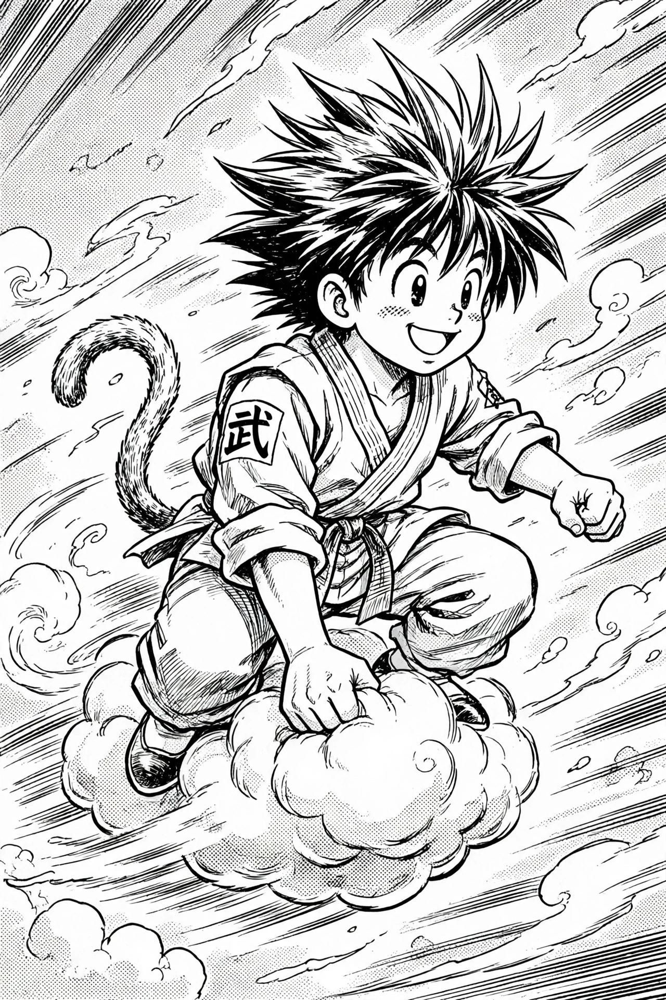

Akira Toriyama
Akira Toriyama (Japanese: 鳥山 明, Hepburn: Toriyama Akira; 5 April 1955 – 1 March 2024) was a Japanese manga artist and character designer. He first achieved mainstream recognition for creating the popular manga series Dr. Slump (1980–1984) before going on to create Dragon Ball (1984–1995), one of the best-selling and most influential manga series of all time. His work also includes character designs for several video games, including the Dragon Quest series, Chrono Trigger, and Blue Dragon.

| Akira Toriyama | |
|---|---|
| Born | 5 April 1955, Nagoya, Aichi, Japan |
| Died | 1 March 2024 (aged 68), Japan |
| Occupation | Manga artist, character designer |
| Years active | 1978–2024 |
| Known for | Dragon Ball, Dr. Slump, Dragon Quest designs |
Career
Toriyama entered the manga industry after submitting work to an amateur contest in Weekly Shōnen Jump. His breakthrough, Dr. Slump, a comedy about a robot girl named Arale, won the Shogakukan Manga Award in 1981 and was adapted into a successful anime. He followed it with Dragon Ball, serialized from 1984 to 1995, which followed the adventures of Son Goku and became a global phenomenon through its anime adaptations and merchandise.
Known for a reclusive lifestyle, Toriyama rarely appeared in public and worked from his studio, Bird Studio, in Aichi Prefecture. He continued to contribute story outlines and character designs to the Dragon Ball Super era and to films such as Dragon Ball Super: Broly (2018) and Dragon Ball Super: Super Hero (2022). His manga Sand Land (2000) received an anime adaptation in 2024.
Death and legacy
Toriyama died on 1 March 2024 from an acute subdural hematoma, at the age of 68; his death was announced a week later and prompted tributes from artists and fans worldwide. He is widely credited with popularizing manga and anime internationally, and his influence can be seen in the work of creators such as Eiichiro Oda (One Piece) and Masashi Kishimoto (Naruto). He was decorated as a Chevalier of the French Ordre des Arts et des Lettres in 2019.
Selected works
- Dr. Slump (1980–1984)
- Dragon Ball (1984–1995)
- Sand Land (2000)
- Jaco the Galactic Patrolman (2013)
Categories: 1955 births · 2024 deaths · Japanese manga artists · Dragon Ball